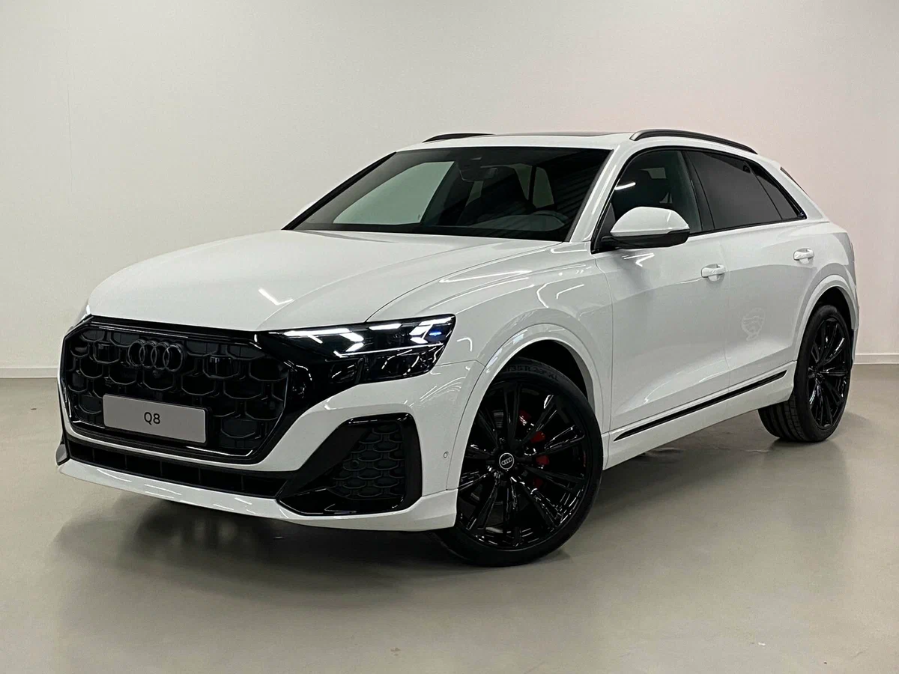

О модели
Audi Q8 4M — это спортивный купе-внедорожник с динамичным дизайном, мощными двигателями и инновационными технологиями.
Характеристики
Двигатель: 3.0L V6 / 4.0L V8 Twin-Turbo
Мощность: 340–600+ л.с.
Разгон 0-100 км/ч: 3.8–5.9 сек
Максимальная скорость: 250 км/ч
Дизайн

Агрессивный силуэт, мощные колёсные арки, матричные LED-фары и спортивный стиль задней части с широкой светодиодной полосой.
Более подробная информация об этой машине

Нажав по картинке выше, вы можете перейти на сайт и ознакомиться с тем, что не увидели у нас.